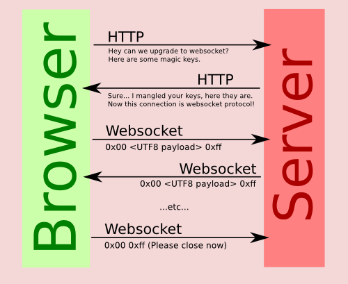

Your browser doesn't support the features required by impress.js, so you are presented with a simplified version of this presentation.
For the best experience please use the latest Chrome or Safari browser. Firefox 10 (to be released soon) will also handle it.
Webp2p&Node.js
奇艺－技术产品中心
@timger
webp2p 可能技术实现
Web Socket
P2P API on Chromium labs
WebRTC
Flash
Web Socket
是为了实现｀即时通讯｀替代`轮训`和`Comet`技术出现的更多参见wiki和W3C
其API只有CONNECTING,OPEN,CLOSING,CLOSED方法,不能LISTEN本地端口
可以和一个websocket server建立长连接，但是不能和其他浏览器建立连接
Web Socket

P2P API
11年3月左右的Chromium开放有此API
 貌似基于Native Client
看开发日志上说已经不再支持
参见 P2P API
Native Client
开发日志中Jan 9, 2012号说移到WebRTC
貌似基于Native Client
看开发日志上说已经不再支持
参见 P2P API
Native Client
开发日志中Jan 9, 2012号说移到WebRTC
WebRTC-Real-time Communication Between Browsers
属于W3C里面的标准见W3CRTC
此技术进化自VoIP，之前的网络电话,用于视频会议和p2p通信部分,如:skype
包含了使用STUN、ICE、TURN、RTP-over-TCP的关键NAT和防火墙穿越技术，并支持代理
开源，主要推动者是Google,
Google Chrome 18+ 中支持该功能
WebRtc 架构图
个人觉得就是提供了更多的API用于web编程,与js结合使用可以实现功能和本地应用媲美的web app,比如google doc
WebRTC - Peer to Peer
Api 接口部分由W3C定义:参见peer-to-peer
代码编写各浏览器可能不一样，google有开源此部分技术
javascript 调用接口完成peer to peer 连接[new PeerConnection()]
此API还是草案，到所有浏览器都支持还需要一段时间
WebRTC - PeerConnection
参见WebRTC
Start a call
Disconnect a call
Receive a call from the remote peer
Remote Peer initiates the disconnection
Node.js
V8 引擎
异步非阻塞
事件驱动
09年2月第一个版本,发展迅速,现在有7k+个库,
Github上watch人数超Rails
V8
V8是google开源的javascript解释器
V8速度是PYTHON的8倍(Python是Ruby的三倍左右)
具体参见shootout上的测试比较
V8除在chrome之外，在服务器端也有很多应用如

其他
支持多种协议HTTP、DNS、NET、UDP、HTTPS、TLS
单进程、单线程模式运行
可快速创建服务器端
Web App前后端统一
应用案例
Remote Peer initiates the disconnection
have you noticed it's in 3D*?